lab6-1 Wireshark-TCP
Lab6-1 TCP
1 Objective
查看TCP(传输控制协议)的详细信息。
2 Requirements
本实验要求使用Wireshark软件、wget程序和任意的web浏览器。
3 Steps
Step 1: Capture a Trace
实验手册中提供了本实验的抓包结果，可以直接点击链接下载（学校官网的链接无法下载，在凯文教授主页找到了可以下载的链接）。
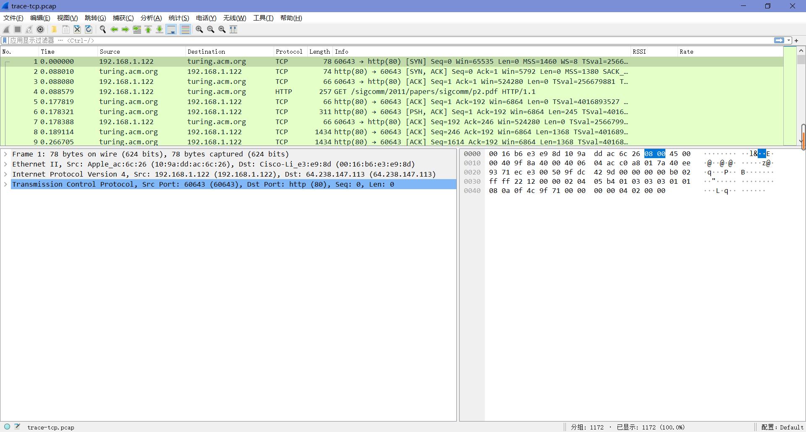
Step 2: Inspect the Trace
任选一个协议列为TCP的从服务端下载到本机的长数据包，查看其TCP协议层的详细信息。
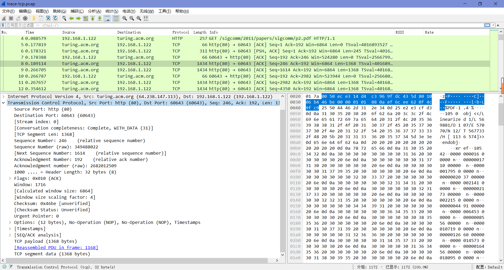
我们可以看到以下字段（我们只讨论通过网络传输的字段）：
- “Source Port”和”Destination Port”是TCP在IP地址之外添加的寻址。”Source Port”即源端口号很可能是80（这里也的确是80），这是因为数据包由web服务器发送，而标准的web服务器端口是80。
- “Sequence Number”给出了第一个有效负载字节在字节流中的位置。
- “Acknowledgment Number”给出了反向字节流中最后接受到的位置。
- “Header Length”给出了TCP报头的长度。
- “Flags”字段有多个标志位来表示TCP段的类型。
- “Checksum”用于检测传输错误。
- “Options”字段提供了一系列选项。
- “TCP payload”字段存储了被传输的字节。
Step 3: TCP Segment Structure
| Source Port | Destination Port | Sequence number | Ack number | Header length | Flags | Check sum | Window size | Urgent pointer | Options | Payload |
|---|---|---|---|---|---|---|---|---|---|---|
| 2 bytes | 2 bytes | 4 bytes | 4 bytes | (2 | bytes) | 2 bytes | 2 bytes | 2 bytes | variable | N bytes |
| TCP header | ~ | ~ | ~ | ~ | ~ | ~ | ~ | ~ | ~ | TCP payload |
Step 4: TCP Connection Setup/Teardown
要查看“三次握手”的运行情况，请查找带有SYN标志的TCP段以及它后面的包，也可以使用过滤器表达式“tcp.flags.syn==1”来搜索带有SYN标志的数据包。
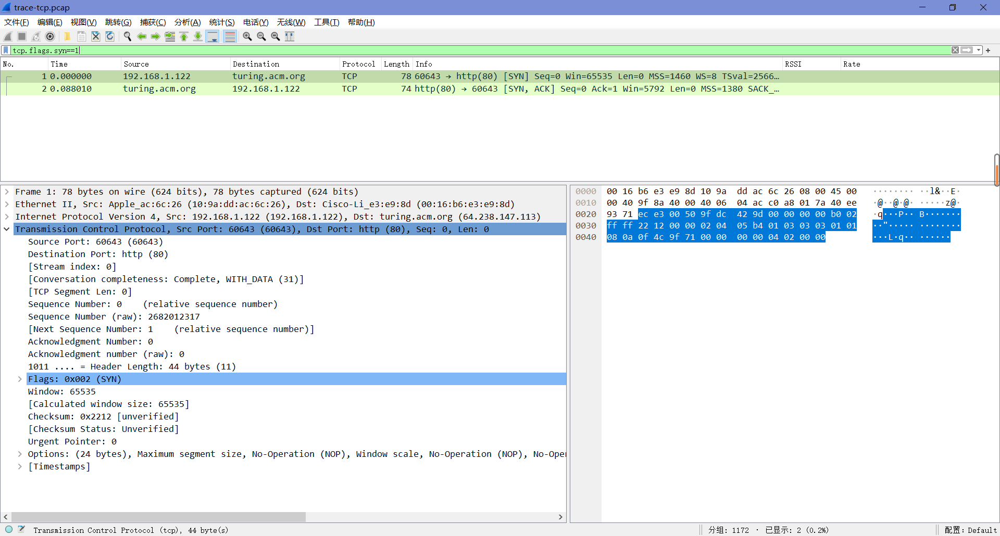
“SYN”包是三次握手的开始。在它被从本机发送到远程服务器后，远程服务器应该返回一个“SYN,ACK”包。在接收到这个包后，本地计算机将对其进行确认并开始发送数据。
Draw a time sequence diagram of the three-way handshake in your trace, up to and including the first data packet (the HTTP GET request) sent by your computer when the connection is established Put your computer on the left side and the remote server on the right side. As usual, time runs down the page, and lines across the page indicate segments.
Include the following features on your diagram:
- The Sequence and ACK number, if present, on each segment. The ACK number is only carried if the segment has the ACK flag set.
- The time in milliseconds, starting at zero, each segment was sent or received at your computer.
- The round-trip time to the server estimated as the difference between the SYN and SYN-ACK segments.
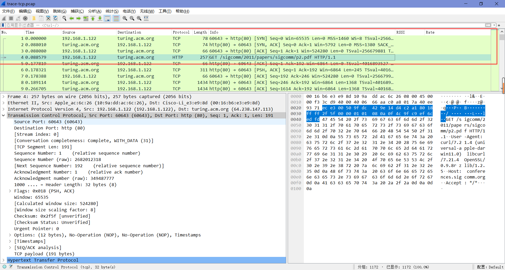
“SYN”包和”SYN,ACK”包及后续包（直至并包括连接建立时计算机发送的第一个数据包(HTTP GET请求)）如上图，参考上图可以画出三次握手的时间序列图。
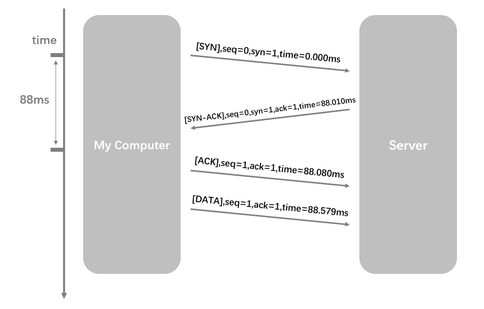
Step 5: Connection Options
除了建立连接之外，TCP “SYN”包还使用选项在两端之间协商参数。每一端通过在其SYN上包含适当的选项向另一端描述其能力(如果有的话)，通常两端都必须支持在数据传输过程中用到的行为。
What TCP Options are carried on the SYN packets for your trace?
如下图。
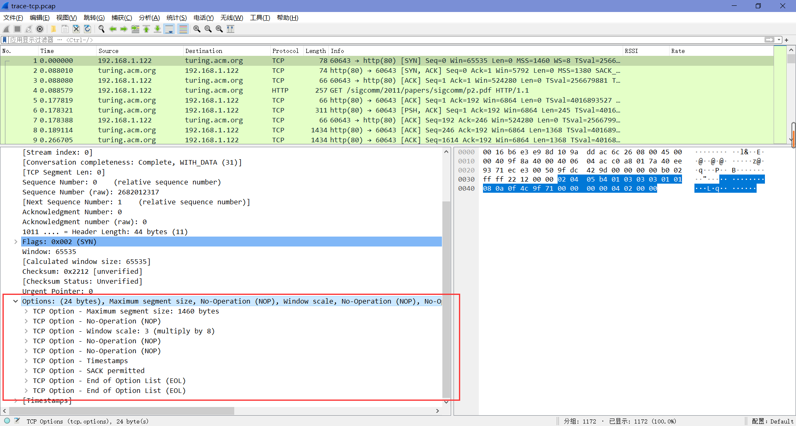
Step 6: FIN/RST Teardown
最后，TCP连接在下载完成后关闭，这通常通过FIN (Finalize)段来完成。每一方发送一个FIN给另一方，并确认他们收到的FIN，这有点类似于三次握手。或者，当一端发送RST (Reset)时，连接可能突然断开，这个数据包不需要被对方确认。
Draw a picture of the teardown in your trace, starting from when the first FIN or RST is issued until the connection is complete. As before, show the sequence and ACK numbers on each segment. If you have FINs then use the time difference to estimate the round-trip time.
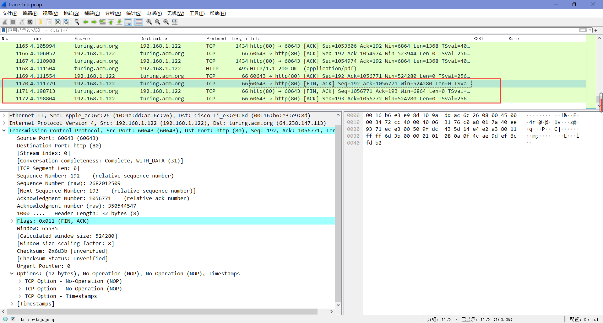
参考上图，可以画出时间序列图。
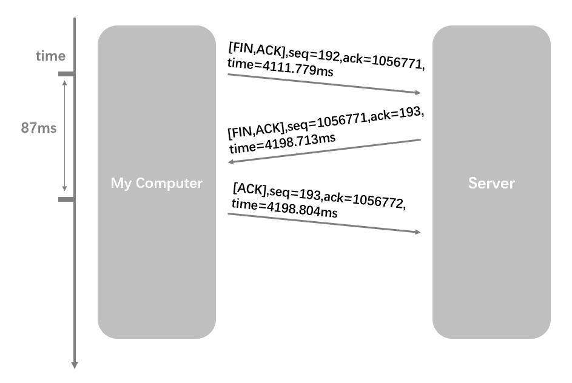
Step 7: TCP Data Transfer
在”统计“栏中选择”I/O图表“，然后点击左下角”+”添加新图形，并修改”Display Filter”值分别为”tcp.srcport==80”和”tcp.dstport\==80”，得到下面的图表。
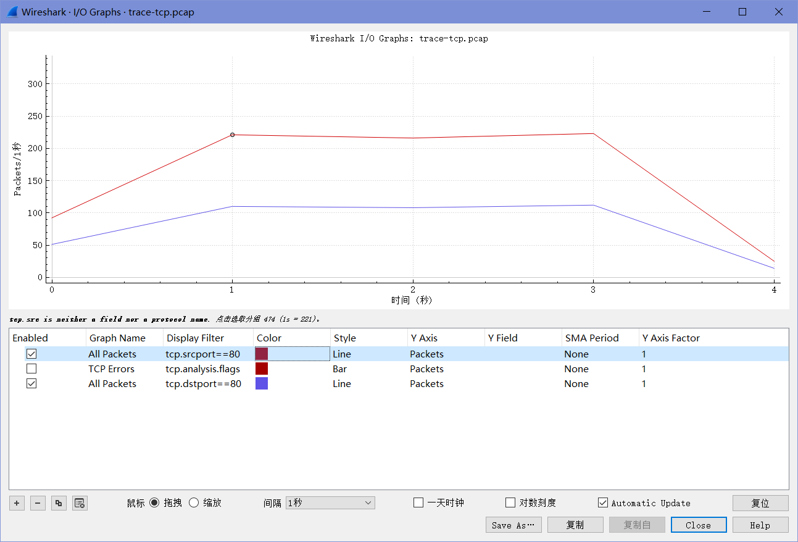
1. What is the rough data rate in the download direction in packets/second and bits/second once the TCP connection is running well?
以包/秒的单位的速率可以参考上图，可以看出速率约为225 包/秒；以位/秒的单位的速率可以参考下图，可以看出速率约为$2.5×10^6$ 位/秒。
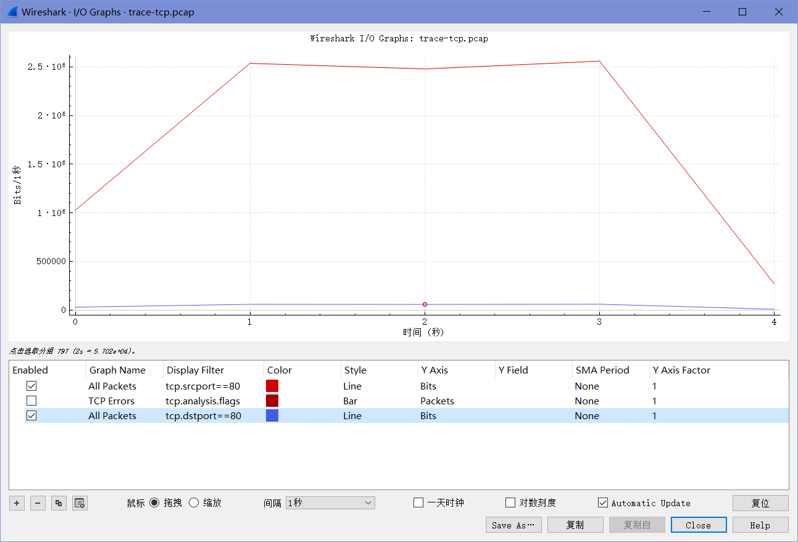
2. What percentage of this download rate is content? Show your calculation. To find out, look at a typical download packet; there should be many similar, large download packets. You can see how long it is, and how many bytes of TCP payload it contains.
由下图可知，下载总量为1434 bytes，其中有效负载总量为1368 bytes，比例约为95.40%（1368/1434≈0.95397）。
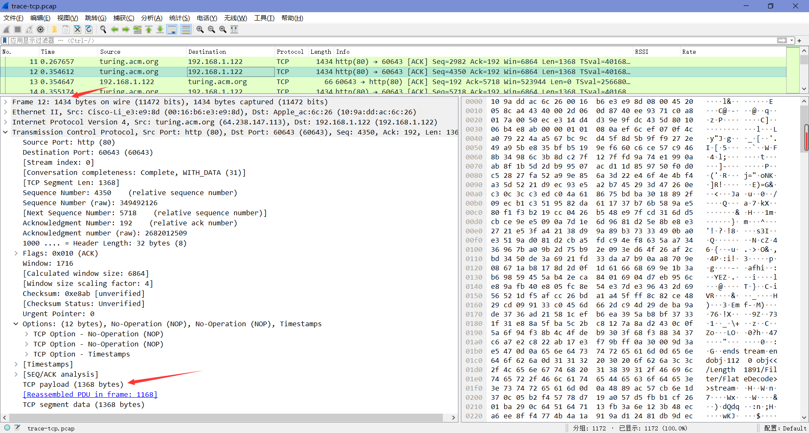
3. What is the rough data rate in the upload direction in packets/second and bits/second due to the ACK packets?
以包/秒为单位的数据可以从第一张I/O图中读到，可以看到约为110 包/秒；以位/秒为单位的数据可以从下图中读到，可以看到约为42000 位/秒。
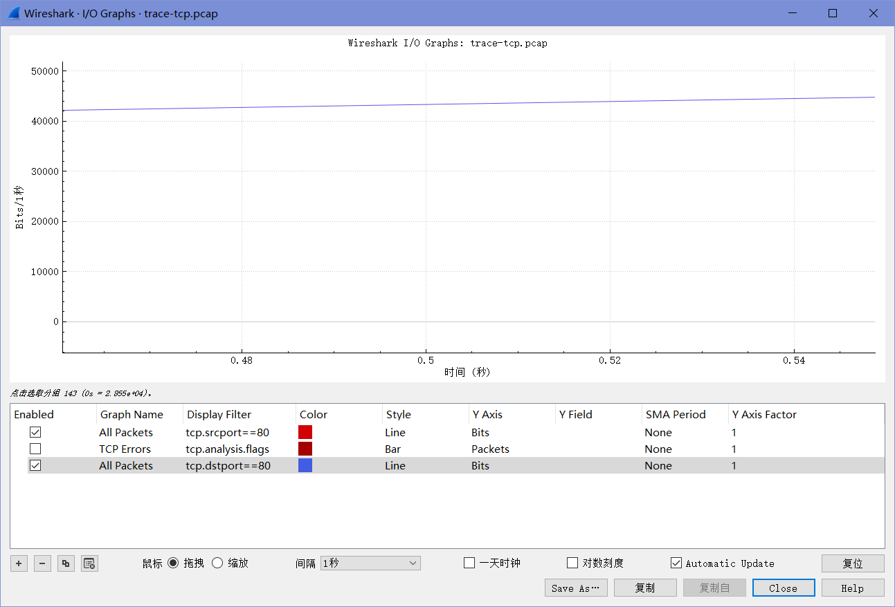
4. If the most recently received TCP segment from the server has a sequence number of X, then what ACK number does the next transmitted TCP segment carry?
X加上数据段中的TCP有效负载字节数。